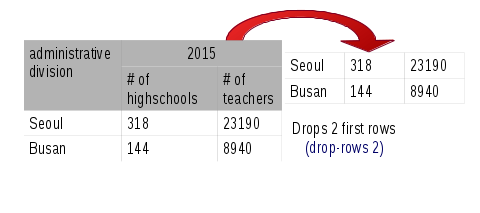

<div layout="column">
    <div>
        <md-button aria-label="Show/hide documentation" ng-click="switchShowUsage()"><i class="fa fa-angle-down"  >Show/hide documentation</i></md-button>
            <div ng-show = "showUsage">
            <p class="api-doc-docstring"> Drops the first n rows from the dataset, retaining the rest </p>
            </img>
            <a href="http://api.grafter.org/master/grafter.tabular.html#var-drop-rows" target="_blank"> view source</a>
        </div>
        </div>
        <div>
            <h3>Parameters</h3>
            <div layout="row">
                
    <md-switch ng-model="function.take" aria-label="switch mode">
    {{function.take?"Take rows":"Drop rows"}}
    </md-switch>
<md-button class="md-raised" ng-click="doGrep()" style="position:absolute; right:10px" aria-label="Grep">Filter Dataset</md-button>
</div>
  <md-input-container flex>
        <label>Number of rows</label>
        <input ng-model="function.numberOfRows" type="number" min="1" required>
    </md-input-container>
    <md-input-container flex>
        <label>Comment</label>

        <input ng-model="function.docstring" type="text" >
    </md-input-container>
</div>
</div>
